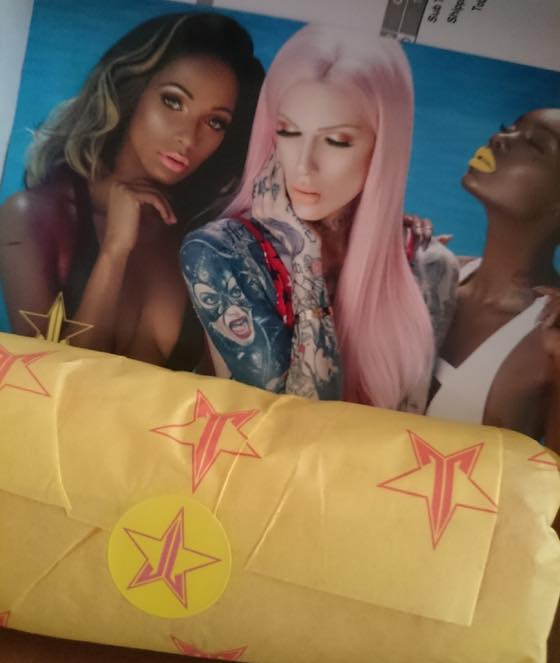
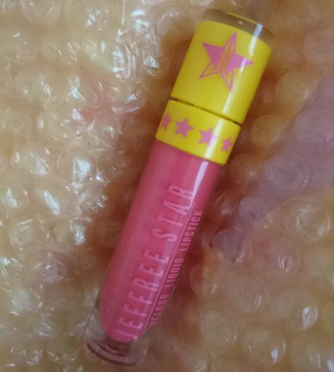
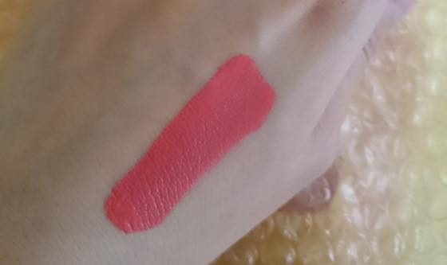
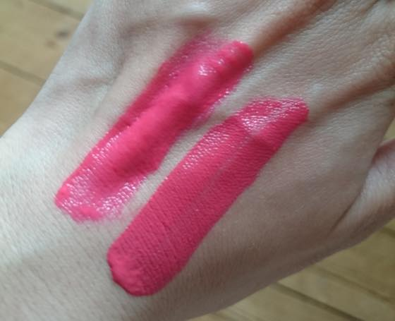
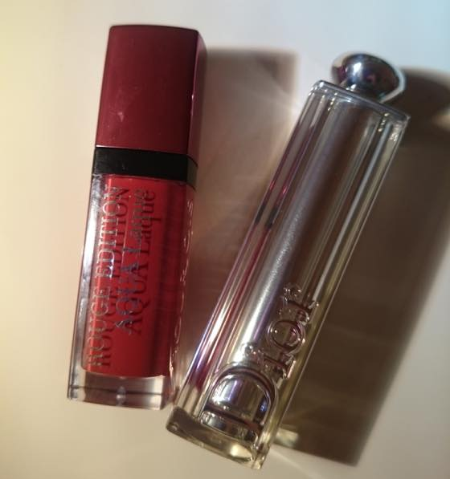
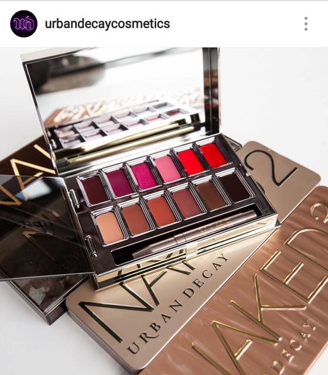

누워서 유툽 + 트위터를 하다보면 이런 결과를 가져옵니다 ㅋㅋㅋㅋ
에반님 트위터에서 립퀴드립스틱 50% 세일한다는걸 보구 워터멜론소다 결제
페이팔 + Contactless 가 사람잡네요 -_-;; 저같은 인간에게 너무 위험해요;;;;
점점 물건구매를 간편하고 쉽게 만드는데 정말 잘 넘어가는 1인 입니다........OTL
*영국 데빗카드는 이제 Contactless 기능이 있어서 한국 교통카드로 편의점에서 물건사듯이
카드기기에 터치만 하면 되는데 (그리고 올해 돌아와보니 교통카드도 가능하게 바뀌었더군요
올해 와서 바뀐점이 가게들이 봉투값(5p)을 받기 시작했고
데빗카드를 교통카드로 사요할수 있다는점. 그리고 계속 오이스터 위클리만 갖고다니다가 어느날 목격한 지하철표 현금으로 구입시 최소 가격이
4.80파운드(약 7천원)인걸 보고 경악을했........;;;;
2009년인가 동생곰이 런던놀러와서 지하철표 사려니 4파운드인거 보고 워우 영쿡물가;; 이런 미친;; 이랬는데
7년만에 0.80이 올랐군요 ㅡㅡ;;; 간단히 말해서 1존내 지하철 2-3정거장 이동하고 싶어도 최소 편도 7천원 이란 소립니다;; 이럴때마다 느끼는거지만 여기 교통비 넘 그지같아 ㅋㅋㅋㅋㅋㅋㅋㅋㅋㅋㅋㅋㅋㅋ
우이되았든!! 물건은 무사히 잘 왔습니다~올레~!!

립스틱 하나 구매했는데 포장이 넘 빠방해서 놀랐음
타르트 팔레트는 뾱뾱이 없이 종이에 대충 뚤뚤말아서 왔는데 ㅋㅋㅋ


헝헝 이런색이 제 취향인가봐요 ㅋㅋ
바를때 향도 좋구 립퀴드 립스틱 타입 건조한걸 못견뎌해서 꼭 위에 투명립글 바르는 편인데
이건 입술이 굉장히 편합니다 :D

갖고있는 메이블린이랑 비교
위: 메이블린 Color Sensational Vivid Matte Liquid Lipstick 20 Coral courage
아래: 제프리스타 워터멜론

그리고 최근에 추가된 립스틱 두개
부르조아 아쿠아락 03 / 디올 어딕트 립스틱
디올 립제품은 엄청 오랜만에 구매해봤습니다
제 첫 립제품이 디올 어딕트 울트라 글로스 였더랬죠. 역시 이것도 인터넷 돌아댕기다가 (나는야 진정한 네티즌;;) 립스틱 중앙 CD 마크에 에센스(??)가 있어 수분젤코트로 쵹쵹하다고 한 문구에 낚였습니다 :p
마무리는 어반디케이 립팔레트 짤방으로

VICE LIPSTICK PALETTE
왼쪽위 세번째 빅뱅(big bang) 색이 느므 궁금합니다. 아니 근데 이거 언제 발매되는겨?